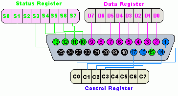

|
Introduction
Parallel
port is a simple and inexpensive tool for building computer controlled
devices and projects. The simplicity and ease of programming makes
parallel port popular in electronics hobbyist world. The parallel port
is often used in Computer controlled robots, Atmel/PIC programmers, home
automation, ...etc... Here a simple tutorial on parallel port
interfacing and programming with some examples.
Everybody
knows what is parallel port, where it can be found, and for what it is
being used. the primary use of parallel port is to connect printers to
computer and is specifically designed for this purpose. Thus it is often
called as printer Port or Centronics port (this name came from a
popular printer manufacturing company 'Centronics' who devised some
standards for parallel port). You can see the parallel port connector in
the rear panel of your PC. It is a 25 pin female (DB25) connector (to
which printer is connected). On almost all the PCs only one parallel
port is present, but you can add more by buying and inserting ISA/PCI
parallel port cards.
Parallel port modes
The IEEE 1284 Standard which has been published in 1994 defines five modes of data transfer for parallel port. They are,
1) Compatibility Mode
2) Nibble Mode
3) Byte Mode
4) EPP
5) ECP
The
programs, circuits and other information found in this tutorial are
compatible to almost all types of parallel ports and can be used without
any problems (Not tested, just because of confidence ! ). More
information on parallel port operating modes can be found here.
Hardware
The pin outs of DB25 connector is shown in the picture below

The lines in DB25 connector are divided in to three groups, they are
1) Data lines (data bus)
2) Control lines
3) Status lines
As the name
refers , data is transferred over data lines , Control lines are used
to control the peripheral and of course , the peripheral returns status
signals back computer through Status lines. These lines are connected to
Data, Control And Status registers internally . The details of parallel
port signal lines are given below
| Pin No (DB25) |
Signal name |
Direction |
Register - bit |
Inverted |
| 1 |
nStrobe |
Out |
Control-0 |
Yes |
| 2 |
Data0 |
In/Out |
Data-0 |
No |
| 3 |
Data1 |
In/Out |
Data-1 |
No |
| 4 |
Data2 |
In/Out |
Data-2 |
No |
| 5 |
Data3 |
In/Out |
Data-3 |
No |
| 6 |
Data4 |
In/Out |
Data-4 |
No |
| 7 |
Data5 |
In/Out |
Data-5 |
No |
| 8 |
Data6 |
In/Out |
Data-6 |
No |
| 9 |
Data7 |
In/Out |
Data-7 |
No |
| 10 |
nAck |
In |
Status-6 |
No |
| 11 |
Busy |
In |
Status-7 |
Yes |
| 12 |
Paper-Out |
In |
Status-5 |
No |
| 13 |
Select |
In |
Status-4 |
No |
| 14 |
Linefeed |
Out |
Control-1 |
Yes |
| 15 |
nError |
In |
Status-3 |
No |
| 16 |
nInitialize |
Out |
Control-2 |
No |
| 17 |
nSelect-Printer |
Out |
Control-3 |
Yes |
| 18-25 |
Ground |
- |
- |
- |
Parallel port registers
As
you know, the Data, Control and status lines are connected to there
corresponding registers inside the computer. So by manipulating these
registers in program , one can easily read or write to parallel port
with programming languages like 'C' and BASIC.
The registers found in standard parallel port are ,
1) data register
2) Status register
3) Control register
As there
names specifies, Data register is connected to Data lines, Control
register is connected to control lines and Status register is connected
to Status lines. (Here the word connection does not mean that there is
some physical connection between data/control/status lines. The
registers are virtually connected to the corresponding lines.). So what
ever you write to these registers , will appear in corresponding lines
as voltages, Of course, you can measure it with a multimeter. And What
ever you give to Parallel port as voltages can be read from these
registers(with some restrictions). For example , if we write '1' to Data
register , the line Data0 will be driven to +5v. Just like this ,we can
programmatically turn on and off any of the data lines and Control
lines.
Where these registers are ?
In
an IBM PC, these registers are IO mapped and will have unique address.
We have to find these addresses to work with parallel port. For a
typical PC , the base address of LPT1 is 0x378 and of LPT2 is 0x278. The
data register resides at this base address , status register at
baseaddress + 1 and the control register is at baseaddress + 2. So once
we have the base address , we can calculate the address of each
registers in this manner. The table below shows the register addresses
of LPT1 and LPT2. Click here for tutorial on how to find base address of
Parallel/Serial ports with sample source code.
| Register |
LPT1 |
LPT2 |
| data registar(baseaddress + 0) |
0x378 |
0x278 |
| status register (baseaddress + 1) |
0x379 |
0x279 |
| control register (baseaddress + 2) |
0x37a |
0x27a |
Programming Concepts
Almost all
programming languages allow programmers to access parallel port using
some library functions. For example , Borland C is providing "Inportb"
and "Outportb" functions to read or write IO mapped peripherals. But the
examples provided here in this tutorial is written VC++ and can be
easily ported to other compilers like Borland C and Turbo C. Visual
Basic does not have any functions or support to access parallel port
directly, but it is possible to add such capabilities to your VB
application by writing a dll in VC++ and calling its exported functions
from VB. VC++ provides two functions to access IO mapped peripherals,
'_inp' for reading and '_outp' for writing. These functions are declared
in "conio.h".
Hardware for testing sample programs
The
schematic diagram of the test circuit is shown below. It is recommended
to build this circuit before testing the sample programs
Sample program in VC++
Writing a
parallel port interfacing program in VC++ is very easy. Here is the
steps to write your first parallel port interfacing application in VC++.
Start VC++
IDE , Select 'New' from File menu.Then select “Win32 Console
Application” from “Projects” tab(picture-3). enter project name as
“partest1” , then click OK button.
Picture-3
Now you can see a dialog box with caption “Win32 Console Application - step 1 of 1” (picture-4).
Picture-4
Select “a simple Application” and click Finish. Now open example1.cpp
from “fileview” and replace the existing code with the code given below.
|
#include "stdafx.h"
#include "conio.h"
#include "stdio.h"
#include "string.h"
#include "stdlib.h"
int main(int argc, char* argv[])
{
short data;
if(argc<2)
{
printf("Usage\n\n");
printf("partest1.exe ,,\n\n\n");
return 0;
}
if(!strcmp(argv[1],"read"))
{
data = _inp(atoi(argv[2]));
printf("Data read from parallel port is ");
printf("%d\n\n\n\n",data);
}
if(!strcmp(argv[1],"write"))
{
_outp(atoi(argv[2]),atoi(argv[3]));
printf("Data written to parallel port is ");
printf("%s\n\n\n\n\n",argv[3]);
}
return 0;
}
|
Build the project and copy partest1.exe to "c:\".
How to Test The Program ?
Connect The
assembled hardware shown above to your PC's parallel port. Open DOS
command window Move to "C:\" and type "partest1 write 888 255" and press
enter. If everything is correct , LED1 to LED8 in the hardware will
glow. You may be doubtful about the command line parameters passed to
the program. Here 888(0x378) is the address of the parallel port data
register and 255 is the data to be written to parallel port data
register. if you enter "partest1 read 888" to command line , the program
will read parallel port data register and display it. This will blindly
read the contents of parallel port data register , but not the data
present on data lines. To read the data from the data lines , we will
have to enable the bidirectional data transfer first. To enable
Bidirectional data transfer just set the "Bidirectional" bit (bit 5) in
control register. This is done by writing 32 to control register. The
command "partest1 write 890 32" will do this. After entering this
command you can read the status of switches in the hardware using the
command "partest1 read 888"
NOTE: This sample program will not work on Windows NT/2000 or XP if you
run the program on these machines , it will show an error. use new Inpout32.dll on NT/2000/XP machines
|